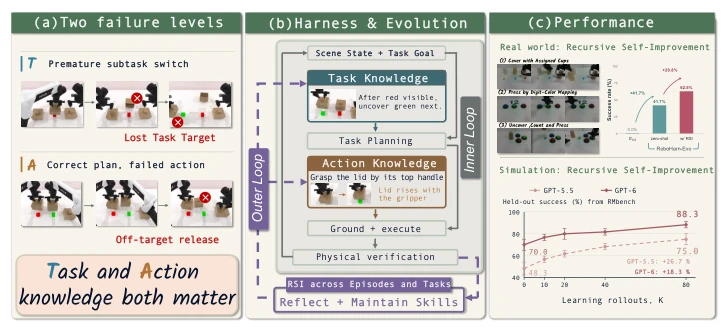
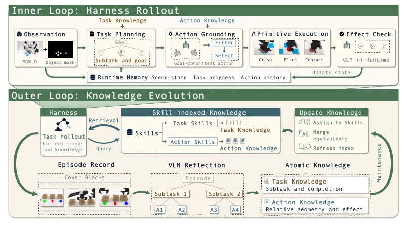
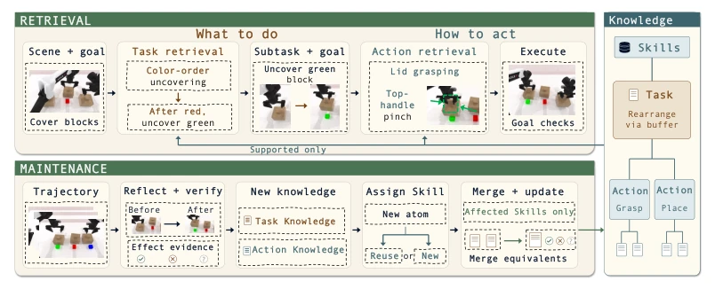
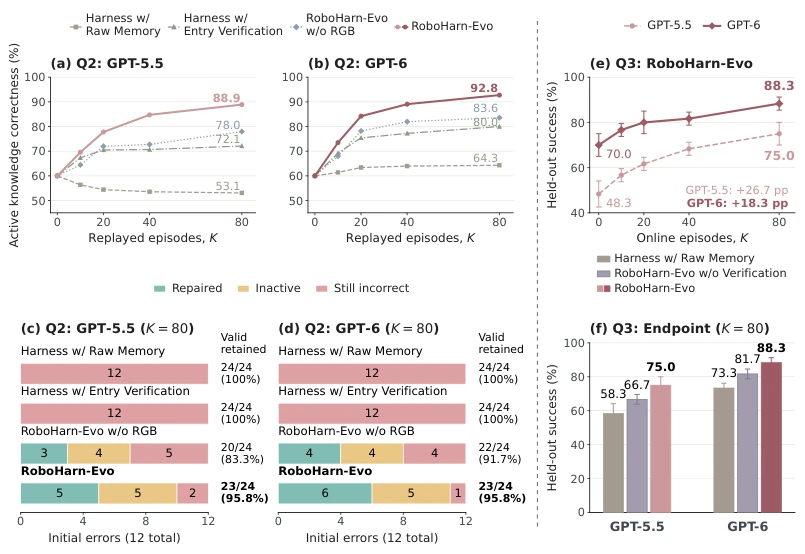
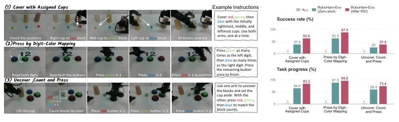
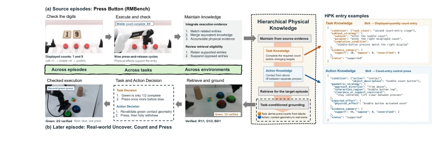
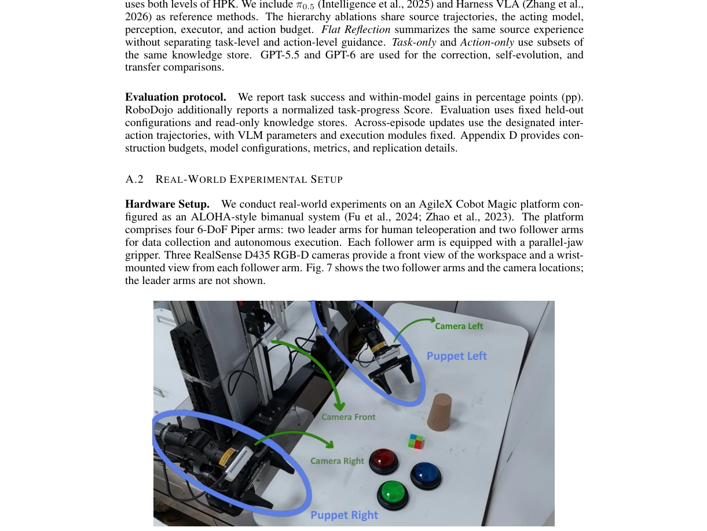
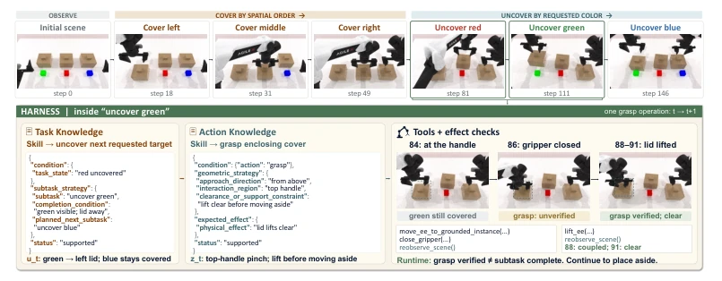
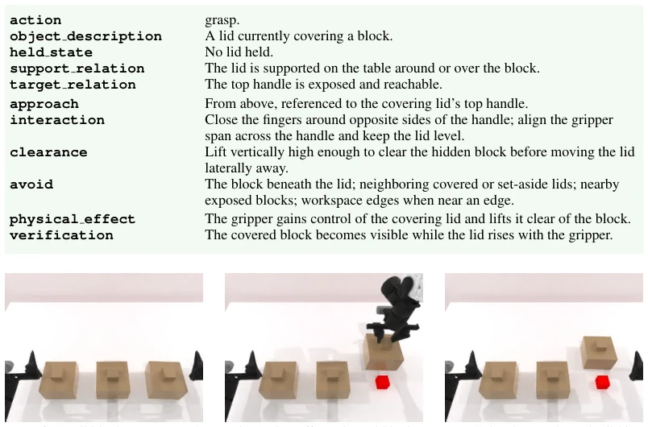

This paper delivers a lesson to the embodied AI community: do not always focus on fine-tuning large models; sometimes "memory" is more important than "brain". The core logic of RoboHarn-Evo is straightforward: fix the VLM and underlying actuators, relying on physical feedback to continuously repair the "knowledge notebook". It decomposes task planning and action execution into two layers of knowledge, attempting to resolve the dilemma of robots "knowing what to do but not knowing how to move their hands" or "moving hands but not completing the task". Although the authors boast of improving success rates by over 20%, upon closer inspection, this is essentially "experience distillation" rather than "model evolution". If physical feedback itself is noise, or the task is too simple, this mechanism might merely "optimize" erroneous knowledge into another form of error. Furthermore, relying on external VLMs for knowledge maintenance presents computational overhead and latency issues as a potential risk in long-horizon tasks. However, achieving self-iteration without updating parameters is indeed smarter than VLA models that only "rote memorize"; at least it has learned to "know errors and correct them".
研究动机Motivation
当前具身智能系统过度依赖端到端微调或大规模数据训练，导致模型一旦部署，面对新环境或长尾错误时往往束手无策，缺乏持续进化的能力。现有工作如 SkillNet (Xie et al., 2026a) 和 Uni-Skill (Xie et al., 2026b) 虽然构建了技能库，但多基于静态演示或离线数据，难以利用在线交互中的物理反馈动态修正错误。REFLECT (Liu et al., 2023) 和 PhysMem (Li et al., 2026a) 尝试引入记忆，但往往混淆了任务级目标与局部动作效果，导致机器人容易在子任务未完成时盲目切换，或动作成功却未达成任务目标（如图 1a 所示）。此外，许多系统如 Zetta (Ding et al., 2026) 和 EmbodiSkill (Ju et al., 2026) 侧重于策略或代码的演化，而非显式的物理知识修正。本文旨在解决这一痛点：如何在固定底层模型的前提下，利用物理交互反馈，将经验转化为可复用的、分层级的物理知识，从而在不重新训练模型的情况下实现机器人能力的自我提升。
Current embodied AI systems overly rely on end-to-end fine-tuning or large-scale data training, resulting that once models are deployed, they are often helpless when facing new environments or long-tail errors, lacking the ability for continuous evolution. Existing works such as SkillNet (Xie et al., 2026a) and Uni-Skill (Xie et al., 2026b) have constructed skill libraries, but are mostly based on static demonstrations or offline data, making it difficult to utilize physical feedback in online interactions to dynamically correct errors. REFLECT (Liu et al., 2023) and PhysMem (Li et al., 2026a) attempt to introduce memory, but often confuse task-level goals with local action effects, causing robots to easily switch blindly when sub-tasks are not completed, or actions succeed but task goals are not achieved (as shown in Figure 1a). In addition, many systems such as Zetta (Ding et al., 2026) and EmbodiSkill (Ju et al., 2026) focus on the evolution of policies or code, rather than explicit physical knowledge correction. This paper aims to solve this critical issue: how to utilize physical interaction feedback to convert experience into reusable, hierarchical physical knowledge under the premise of fixing the underlying model, thereby achieving self-improvement of robot capabilities without retraining the model.

Figure 1: Self-improving robotic manipulation through hierarchical knowledge evolution. (a) In ordered block manipulation, the robot may switch to the next block before completing the current subtask (top), or select the correct target but release the cover off target (bottom). (b) Physical feed- back updates Task and Action Knowledge across episodes, with the VLM and executor held fixed. (c) Knowledge evolution improves held-out simulation success by 18.3–26.7 percentage points af- ter 80 rollouts. On real-world tasks, simulation-derived knowledge achieves 41.7% mean zero-shot success, which rises to 62.5% after further knowledge updates from real-world interaction.
RoboHarn-Evo adopts a dual-loop architecture, with the core being the evolution of Hierarchical Physical Knowledge (HPK). The inner loop is responsible for execution: the VLM retrieves "task knowledge" (deciding what sub-tasks to do and completion conditions) and "action knowledge" (deciding specific geometric strategies and physical effects) from the HPK library based on the current scene state and task goal, generating tool calls and executing them. The outer loop is responsible for evolution: utilizing physical feedback after execution (such as visual observations, tool call results) to reflect on historical experience. The system first converts trajectories into atomic knowledge entries, distinguishing task-level (sub-task logic) and action-level (geometry and physical effects). Subsequently, relevant entries are grouped through "skill indexing", utilizing an evidence-driven mechanism for maintenance: verifying whether the task is truly completed and whether the action produces the expected physical effect. If evidence supports, retain or merge entries; if evidence opposes (e.g., action succeeds but task not completed), correct or disable the entry. This mechanism ensures that knowledge updates target only affected skill groups, and the consistency of task goals constrains the reuse of action strategies, achieving a closed loop from "trial and error" to "experience accumulation".

Figure 2: Overview of RoboHarn-Evo. Top: The inner loop executes manipulation operations and records their outcomes. Bottom: The outer loop organizes this experience into Task and Action Knowledge for subsequent decisions. Concrete motions are computed from the current scene.

Figure 3: Skill-routed retrieval and evidence-driven maintenance. Top: Task retrieval deter- mines what to do; conditioned on that subtask, Action retrieval determines how to act using sup- ported atomic knowledge. Bottom: Before–after execution evidence is reflected into new Task and Action Knowledge, assigned to Skills, and used to consolidate and update only the affected knowl- edge groups.
Experiments were conducted on RMBench and RoboDojo, comparing baselines such as π0.5 and Harness VLA. Results show that after introducing Full HPK, the average success rate of GPT-6 on RMBench increased from 72.5% to 91.7%, and GPT-5.5 from 58.3% to 82.5%, significantly outperforming the version without HPK. Ablation studies indicate that task knowledge and action knowledge are complementary; using either layer alone yields inferior results compared to their combination. In terms of knowledge maintenance, the system can correct 83%-91% of initial erroneous knowledge while retaining 95.8% of correct knowledge, proving its error correction capability. Additionally, when knowledge learned in simulation is zero-shot transferred to RoboDojo, success rates increased by 25-35 percentage points. In real-world experiments, after 80 interactions, the robot's success rate increased from 41.7% to 62.5%, validating the effectiveness of physical feedback on knowledge evolution.

Figure 4: Knowledge maintenance and held-out manipulation performance. (a,b) Active- knowledge correctness under shared-evidence replay. (c,d) Outcomes of the 12 initial errors and retention of the 24 initially correct entries at K = 80. (e) Held-out success across learning check- points. (f) Endpoint comparisons using the same source experience at K = 80. K counts interaction rollouts. Error bars in (e,f) indicate standard deviations over three learning histories. Q2 replays previously collected interaction records to evaluate knowledge maintenance; Q3 collects experience through online interaction to evaluate subsequent task performance.

Figure 5: Real-world transfer and self-improvement. (a) Task sequences and example instruc- tions. (b) Success rate (top) and normalized task progress (bottom) for π0.5 and RoboHarn-Evo before and after RSI. Zero-shot uses simulation-derived HPK; After RSI incorporates additional real-world interaction. RoboHarn-Evo results use eight scenes per task, with full task completion counted as success.

Figure 6: Task-conditioned knowledge reuse from simulation to the real world. (a) Simulated pressing experience provides physical evidence for maintaining HPK. (b) A later real-world episode uses block-derived counts and scene-specific contact geometry to complete the second green press before switching to blue. The right panels show condensed Task and Action Knowledge entries with accumulated source evidence. Arrows illustrate the maintenance and reuse workflow.
其他图片Other Figures

Figure 7: Real-world hardware setup. The AgileX Cobot Magic platform uses two follower arms for tabletop manipulation, with one front-view and two wrist-mounted RGB-D cameras. The fol- lower arms are labeled Puppet Left and Puppet Right in the image.

Figure 8: Example of Cover Blocks.

Figure 9: Evidence associated with the two representative entries from demonstration episode 9. The Task Knowledge evidence spans frames 512–687. The Action Knowledge evidence for grasping the enclosing lid spans frames 512–600. The final frame also verifies completion of the subsequent set-aside action.